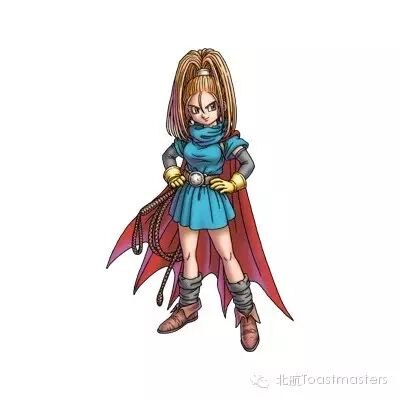

Mask
TM：Vance
TTM：KiKi
Mask is an article normally worn on one’s face,typically for protection, concealment, performance, or amusement. When Halloween is coming, many people will buy masks to make this holiday wonderful.We wear mask to dance, we wear mask to talk to others, we wear mask to make friends. But mask is not just a kind of adornment, it also means that people wear different clothes in different places. There is an internet book called The People Who Are Wearing Mask. It tells that we live in a world where there are full masks. Everyone wears a mask and walks around the world. Although it overstates the reality of the world, it does reflect the modern concept.Different people have different understanding on mask. Some people think a mask is a beautiful adornment that will make life beautiful. Some people think a mask is a fake thing that makes people don’t trust each other. And some people think that a mask is just a kind of way to communicate with others in different places. What’s your opinion about mask? Welcome to our meeting and share your ideas.
Each place has its streams in from all over the country
Everyone has his or her own hometown. Hometownis always the most beautiful place. Hometown is not only the place where we were born in, but also the place that we can never forget. We live in our hometown for many years, there are so many unforgettable experiences in our hometown. Crystal is a beautiful girl who is from china. She always tells us that china is not a town but a city. Do you want to know more about china? Do you want to know why china is famous for its porcelain? Crystal will let us know the reason. We are hoping for Crystal’s ice break speech.

My name is Babara
Do you know the meaning of your name? Why you have this English name? Name will reflect one’s characteristic. Babara is a clever girl. Every time I see her name, I think she must be a cute girl because Babara is a cute name. Good name will leave others deep impression. It’s helpful for others to remember you. This time, Babara will tell us her characteristic and what she is. Let’s look forward to Babara CC1 speech. Shewill leave a deep impression.
Be a real one
With the globalization of economy, many things are changing. We want to compete with others. We want to make much money. We want to get more. So in order to realize our goal, we work hard, we wear amask, we tell lies. All in all, we are becoming fake people. But are these what we want? Han has his own opinion. Because he wants to be a real person. Let’s listen to Han’s speech and know what he wants to tell us.
Toastmasters International (TI) is a nonprofit educational organization that operates clubs worldwide for the purpose of helping members improve their communication, public speaking, and leadership skills.
https://mp.weixin.qq.com/s/OxRexNmdJdTuC1UJoTc7yw
本页为抢救式本地归档，图文已永久保存。